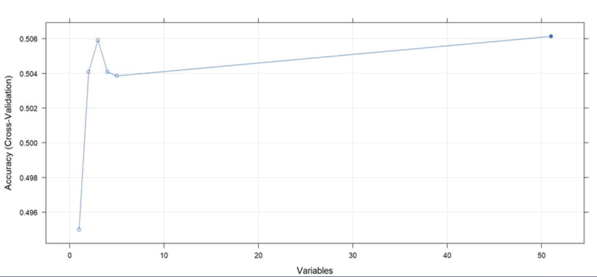

The objective is to develop a predictive model to improve forecasting accuracy for heart attacks. By leveraging machine learning or statistical modeling, we aim to identify individuals at elevated risk. This can guide patients in adopting healthier lifestyles, help physicians with efficient management, and inform policymakers for better health strategies.
Dataset Name: Heart Attack Risk Prediction Dataset
🔗 Source:
Kaggle Dataset Link
Description: This dataset is designed to analyze and predict heart attack risk based on various health, lifestyle, and demographic factors. It includes attributes such as age, cholesterol levels, blood pressure, smoking habits, exercise patterns, dietary preferences, and medical history. Two versions of the dataset are prepared:
Total Rows: 8,763
| Variable Name | Description | Data Type |
|---|---|---|
| Heart Attack Risk | Presence of heart attack risk (1: Yes, 0: No) | QL (Bin) |
| Age | Age of the patient (in years) | Q (Int) |
| Sex | Gender of the patient (Male/Female) | QL (2) |
| Cholesterol | Cholesterol levels of the patient (mg/dL) | Q (Int) |
| Heart Rate | Resting heart rate (bpm) | Q (Int) |
| Diabetes | Whether the patient has diabetes (Yes/No) | QL (Bin) |
| Family History | Family history of heart-related problems | QL (Bin) |
| Smoking | Smoking status | QL (Bin) |
| Obesity | Obesity status | QL (Bin) |
| Alcohol Consumption | Level of alcohol consumption (None/Light/Moderate/Heavy) | QL (4) |
| Exercise Hours Per Week | Weekly hours of exercise | Q (Real) |
| Diet | Dietary habits (Healthy/Average/Unhealthy) | QL (3) |
| Previous Heart Problems | History of heart problems | QL (Bin) |
| Medication Use | Medication usage status | QL (Bin) |
| Stress Level | Self-reported stress level (1–10) | Q (Int) |
| Sedentary Hours Per Day | Average daily sedentary time | Q (Real) |
| Income | Income level | Q (Real) |
| BMI | Body Mass Index | Q (Real) |
| Triglycerides | Triglyceride level (mg/dL) | Q (Int) |
| Physical Activity Days Per Week | Physical activity frequency per week | Q (Int) |
| Sleep Hours Per Day | Average sleep hours daily | Q (Real) |
| Country | Country of residence | QL (21) |
| Continent | Continent of residence | QL (7) |
| Northern.Hemisphere | Hemisphere (Northern/Southern) | QL (Bin) |
| Systolic | Systolic blood pressure (mmHg) | Q (Int) |
| Diastolic | Diastolic blood pressure (mmHg) | Q (Int) |
| Variable Name | Description | Data Type |
|---|---|---|
| Heart Attack Risk | Presence of heart attack risk (1: Yes, 0: No) | QL (Bin) |
| Age | Age of the patient (in years) | Q (Int) |
| Sex | Gender of the patient (Male/Female) | QL (2) |
| Cholesterol | Cholesterol levels of the patient (mg/dL) | Q (Int) |
| Heart Rate | Resting heart rate (bpm) | Q (Int) |
| Diabetes | Whether the patient has diabetes | QL (Bin) |
| Family History | Family heart condition history | QL (Bin) |
| Smoking | Smoking status | QL (Bin) |
| Obesity | Obesity status | QL (Bin) |
| Alcohol Consumption | Alcohol intake level (encoded) | QL (4) |
| Exercise Hours Per Week | Hours of exercise weekly | Q (Real) |
| Previous Heart Problems | Past heart condition | QL (Bin) |
| Medication Use | Medication usage | QL (Bin) |
| Stress Level | Stress level (scale 1–10) | Q (Int) |
| Sedentary Hours Per Day | Average daily sedentary time | Q (Real) |
| Income | Income level | Q (Real) |
| BMI | Body Mass Index | Q (Real) |
| Triglycerides | Triglyceride level (mg/dL) | Q (Int) |
| Physical Activity Days Per Week | Active days per week | Q (Int) |
| Sleep Hours Per Day | Average daily sleep duration | Q (Real) |
| Northern.Hemisphere | Hemisphere (Northern/Southern) | QL (Bin) |
| Systolic | Systolic BP (mmHg) | Q (Int) |
| Diastolic | Diastolic BP (mmHg) | Q (Int) |
| Diet_DietAverage | Average diet dummy | QL (Bin) |
| Diet_DietHealthy | Healthy diet dummy | QL (Bin) |
| Diet_DietUnhealthy | Unhealthy diet dummy | QL (Bin) |
| Country_CountryX | Dummy vars for country (20 cols) | QL (Bin) |
| Continent_ContinentX | Dummy vars for continent (6 cols) | QL (Bin) |
The methodology encompasses three main stages: Data Preprocessing, Predictive Modeling, and Model Evaluation.
head(), str(), and summary() to understand the structure and detect inconsistencies.model.matrix().Six supervised learning models were developed to classify heart attack risk:
rpart, pruned based on CP, and evaluated with training and test datasets. Visualizations of trees were produced.tune() and feature selection with recursive feature elimination (RFE).Model performance was evaluated by comparing classification accuracy and test error rates. Global and regional results were tabulated, and confusion matrices were constructed for interpretability. The most effective model was determined based on test performance across all geographies.
Based on the results of global modeling, the Support Vector Machine (SVM) demonstrated the highest predictive performance, achieving a test accuracy of 64.23%. Other models showed lower test accuracies, including Logistic Regression (55%), Discriminant Analysis (50%), k-NN (51.67%), Decision Tree (51.32%), and Random Forest (51.37%).
Although predictive modeling was conducted thoroughly and SVM yielded the highest global accuracy (64.23%), overall accuracies remained modest, especially for regional models like k-NN which showed higher variance. As a result, patterns identified may not fully reflect real-world cardiovascular risk distributions, and model performance may not generalize well to actual populations. These limitations highlight the importance of using authentic, clinically validated data when developing predictive healthcare models.
When evaluating regional performance, the k-Nearest Neighbors (k-NN) had better accuracy for country-specific subsets, especially inItaly (68%), Japan (66%). Optimal values of k were identified through iterative tuning for each region, and performance is visualized in the following charts:
The SVM performance across all test samples is shown below:

The analysis highlights several critical insights into heart attack prediction. First, among global models, Support Vector Machine (SVM) consistently outperformed others in terms of test accuracy, suggesting that non-linear boundaries may better capture the underlying patterns in the data. Regionally, k-Nearest Neighbors (k-NN) yielded better classification accuracy, particularly in countries such as Italy and Japan, indicating that localized health behaviors and demographic factors may be better captured through instance-based learning methods.
Feature importance analysis across various models revealed that physiological factors such as cholesterol, systolic and diastolic blood pressure, and triglycerides were strong indicators of heart attack risk. Additionally, lifestyle and behavioral variables—including stress level, medication use, BMI, and smoking status—demonstrated varying influence depending on the region, emphasizing the need for geographically tailored risk assessments.
Despite rigorous modeling efforts, overall accuracy remained modest. This limitation stems from the synthetic nature of the dataset, which may not fully reflect real-world variability. Therefore, while the results suggest patterns and relationships worth exploring, they should be validated using real patient data before any clinical application. This underscores the importance of data authenticity and quality in predictive health analytics.
The analysis and modeling workflow was developed using the following technologies:
dplyr and ggplot2 for data manipulation and visualizationcaret for model training and cross-validatione1071 for Support Vector Machines and Naive Bayes modelingrpart and rpart.plot for decision treesrandomForest for ensemble-based classificationMASS for logistic regression with stepwise selectionggcorrplot for correlation heatmaps
📄 Datasets used for the analysis:
• data.csv – Cleaned dataset with binary variables
• data1.csv – Dummy-encoded dataset for modeling
You can view the entire R script below without downloading.
Full R script used for data preprocessing, modeling, and evaluation is available here:
📂
R script_Heart Attack Risk Prediction.R
# R script begins here
#-------------------------------------------------------------
# Predictive Analytics Project: Heart Attack Risk Prediction
#
# Agenda:
# Part 1: Data Preprocessing
# Part 2: Predictive Modeling
# Part 3: Model Evaluation
#-------------------------------------------------------------
#-------------------------------------------------------------
# Part 1: Data Preprocessing
# 1. Setup: Loading libraries, data, and initial inspection.
# 2. Data Cleaning & Feature Engineering: Reordering,
# handling missing/outlier issues, splitting composite variables,
# encoding categorical variables, and creating dummies.
# 3. Exploratory Data Analysis (EDA): Descriptive statistics and
# visualizations to understand variable distributions and relationships.
# 4. Correlation Analysis: Examining relationships between the
# response (Heart.Attack.Risk) and various feature groups.
# 5. Data Splitting for Modeling: Creating balanced training sets
# and test sets that reflect the original class distribution.
# 6. Export: Saving the processed datasets for further analysis.
#-------------------------------------------------------------
# ===========================================================
# SECTION 1: SETUP
# ===========================================================
## 1.1 Load Required Libraries
library(ggplot2)
library(dplyr)
library(RColorBrewer)
library(ggcorrplot) # For correlation heatmaps
## 1.2 Load the Dataset and Initial Inspection
data <- read.csv("heart_attack_Kaggle.csv")
head(data)
str(data)
names(data)
# ===========================================================
# SECTION 2: DATA CLEANING & FEATURE ENGINEERING
# ===========================================================
## 2.1 Reorder Columns and Remove Unnecessary Data
# Move 'Heart.Attack.Risk' to the first column and drop 'Patient.ID'
data <- data[, c(26, 2:25)]
## 2.2 Data Type Inspection and Informational Categorization
# (Binary categorical, multi-category, continuous, discrete variables)
str(data)
## 2.3 Process Composite Variables: Blood Pressure
# Split 'Blood.Pressure' into 'Systolic' and 'Diastolic'
data[c("Systolic", "Diastolic")] <- do.call(rbind, strsplit(data$Blood.Pressure, "/"))
data$Systolic <- as.numeric(data$Systolic)
data$Diastolic <- as.numeric(data$Diastolic)
data$Blood.Pressure <- NULL # Drop original column
for (var in c("Systolic", "Diastolic")) {
z_scores <- scale(data[[var]])
outliers <- data[[var]][abs(z_scores) > 3]
cat("\nOutliers in", var, ":\n")
print(outliers)
}
## 2.4 Missing Values and Outlier Detection in Continuous Variables
na_counts <- colSums(is.na(data))
print(na_counts)
continuous_vars <- c("Age", "Cholesterol", "Heart.Rate",
"Exercise.Hours.Per.Week", "Sedentary.Hours.Per.Day",
"Income", "BMI", "Triglycerides", "Sleep.Hours.Per.Day")
for (var in continuous_vars) {
z_scores <- scale(data[[var]])
outliers <- data[[var]][abs(z_scores) > 3]
cat("\nOutliers in", var, ":\n")
print(outliers)
}
# No missing values detected; outlier check shows no significant issues.
## 2.5 Encode and Transform Categorical Variables
### 2.5.1 Encode Binary Variables
data$Sex <- ifelse(data$Sex == "Female", 1, 0)
data$Hemisphere <- ifelse(data$Hemisphere == "Northern Hemisphere", 1, 0)
# Rename for clarity
names(data)[which(names(data) == "Sex")] <- "Female"
names(data)[which(names(data) == "Hemisphere")] <- "Northern.Hemisphere"
### 2.5.2 Create Dummy Variables for Multi-category Variables
data$Diet <- as.factor(data$Diet)
data$Country <- as.factor(data$Country)
data$Continent <- as.factor(data$Continent)
tempDiet <- data.frame(model.matrix(~ Diet - 1, data = data))
tempCountry <- data.frame(model.matrix(~ Country - 1, data = data))
tempContinent <- data.frame(model.matrix(~ Continent - 1, data = data))
colnames(tempDiet) <- paste("Diet", colnames(tempDiet), sep = "_")
colnames(tempCountry) <- paste("Country", colnames(tempCountry), sep = "_")
colnames(tempContinent) <- paste("Continent", colnames(tempContinent), sep = "_")
# Combine dummy variables to create an alternative dataset 'data1'
data1 <- cbind(data, tempDiet, tempCountry, tempContinent)
data1 <- data1[, !names(data1) %in% c("Diet", "Country", "Continent")]
rm(tempDiet, tempCountry, tempContinent)
## 2.6 Define Variable Groups (Informational)
response_var <- "Heart.Attack.Risk"
binary_vars <- c("Diabetes", "Family.History", "Smoking", "Obesity",
"Alcohol.Consumption", "Previous.Heart.Problems", "Medication.Use",
"Female", "Northern.Hemisphere")
continuous_vars <- c("Age", "Cholesterol", "Heart.Rate",
"Exercise.Hours.Per.Week", "Sedentary.Hours.Per.Day",
"Income", "BMI", "Triglycerides", "Sleep.Hours.Per.Day")
discrete_vars <- c("Stress.Level", "Physical.Activity.Days.Per.Week")
new_vars <- c("Systolic", "Diastolic")
num_vars <- c(continuous_vars, discrete_vars, new_vars)
# ===========================================================
# SECTION 3: EXPLORATORY DATA ANALYSIS (EDA) & DESCRIPTIVE VISUALIZATIONS
# ===========================================================
## 3.1 Overview and Descriptive Analysis
# (Informational comments on variable categorization and grouping)
## 3.2 Define a Custom Color Palette for Visualizations
pastel_colors <- c("#85C1E9", "#76D7C4", "#A9CCE3", "#82E0AA", "#AED6F1", "#58D68D")
## 3.3 Visualizations for Descriptive Analysis
### 3.3.1 Risk by Country (Bar Chart)
ggplot(data, aes(x = reorder(Country, -Heart.Attack.Risk), fill = as.factor(Heart.Attack.Risk))) +
geom_bar(position = "fill") +
scale_fill_manual(values = pastel_colors[1:2], labels = c("No Risk", "At Risk")) +
theme_minimal() +
labs(title = "Heart Attack Risk Proportion by Country",
x = "Country", y = "Proportion",
fill = "Heart Attack Risk") +
theme(axis.text.y = element_text(size = 10)) +
coord_flip()
### 3.3.2 Age Distribution for At-Risk Individuals
ggplot(data %>% filter(Heart.Attack.Risk == 1), aes(x = Age)) +
geom_histogram(aes(y = after_stat(count)), binwidth = 5, fill = pastel_colors[2],
alpha = 0.7, color = "white") +
geom_density(aes(y = after_stat(count) * 5), color = "#85C1E9", size = 1) +
theme_minimal() +
labs(title = "Distribution of At-Risk of Heart Attack by Age",
x = "Age", y = "Count")
### 3.3.3 Income Distribution by Risk Group (Boxplot)
ggplot(data, aes(x = as.factor(Heart.Attack.Risk), y = Income,
fill = as.factor(Heart.Attack.Risk))) +
geom_boxplot(alpha = 0.7, outlier.shape = NA) +
scale_fill_manual(values = pastel_colors[1:2], labels = c("No Risk", "At Risk")) +
theme_minimal() +
labs(title = "Income Distribution by Heart Attack Risk",
x = "Heart Attack Risk",
y = "Income (USD)",
fill = "Risk Group") +
theme(axis.text.x = element_text(size = 12))
### 3.3.4 Risk by Gender (Bar Chart)
# Note: The 'Female' variable now represents gender (Female = 1)
ggplot(data, aes(x = Female, fill = as.factor(Heart.Attack.Risk))) +
geom_bar(position = "fill") +
scale_fill_manual(values = pastel_colors[1:2], labels = c("No Risk", "At Risk")) +
theme_minimal() +
labs(title = "Heart Attack Risk Proportion by Gender",
x = "Gender (Female = 1)", y = "Proportion",
fill = "Heart Attack Risk")
### 3.3.5 Overall Risk Distribution (Pie Chart)
heart_attack_dist <- data %>%
group_by(Heart.Attack.Risk) %>%
summarise(Count = n()) %>%
mutate(Percentage = Count / sum(Count) * 100,
Label = paste0(round(Percentage, 1), "%"))
ggplot(heart_attack_dist, aes(x = "", y = Percentage, fill = as.factor(Heart.Attack.Risk))) +
geom_bar(stat = "identity", width = 1, color = "white") +
coord_polar(theta = "y") +
scale_fill_manual(values = pastel_colors[1:2], labels = c("No Risk", "At Risk")) +
theme_void() +
labs(title = "Heart Attack Risk Distribution",
fill = "Heart Attack Risk") +
theme(legend.position = "right") +
geom_text(aes(label = Label), position = position_stack(vjust = 0.5), size = 5)
# ===========================================================
# SECTION 4: CORRELATION ANALYSIS
# ===========================================================
## 4.1 Correlation with Demographic Factors
demographic_vars <- c("Female", "Age", "Northern.Hemisphere", "Income", "Country", "Continent")
data_demographic <- data %>%
select(Heart.Attack.Risk, all_of(demographic_vars)) %>%
mutate(Country = as.numeric(Country),
Continent = as.numeric(Continent))
cor_demographic <- cor(data_demographic, use = "complete.obs")
ggcorrplot(cor_demographic, method = "circle",
colors = c("#6baed6", "#f7fbff", "#74c476"),
title = "Correlation: Risk vs Demographic Factors",
lab = TRUE)
## 4.2 Correlation with Physiological & Clinical Variables
physio_clinical_vars <- c("Cholesterol", "Systolic", "Diastolic",
"Triglycerides", "Heart.Rate", "BMI", "Obesity")
data_physio_clinical <- data %>% select(Heart.Attack.Risk, all_of(physio_clinical_vars))
cor_physio_clinical <- cor(data_physio_clinical, use = "complete.obs")
ggcorrplot(cor_physio_clinical, method = "circle",
colors = c("#6baed6", "#f7fbff", "#74c476"),
title = "Correlation: Risk vs Physiological & Clinical Variables",
lab = TRUE)
# Note: Strongest correlations observed between Cholesterol and Systolic
## 4.3 Correlation with Medical History Variables
medical_history_vars <- c("Diabetes", "Family.History", "Previous.Heart.Problems", "Medication.Use", "Stress.Level")
data_medical_history <- data %>% select(Heart.Attack.Risk, all_of(medical_history_vars))
cor_medical_history <- cor(data_medical_history, use = "complete.obs")
ggcorrplot(cor_medical_history, method = "circle",
colors = c("#6baed6", "#f7fbff", "#74c476"),
title = "Correlation: Risk vs Medical History",
lab = TRUE)
# Note: Strongest correlation observed with Diabetes
## 4.4 Correlation with Lifestyle Factors
lifestyle_vars <- c("Smoking", "Alcohol.Consumption", "Diet", "Exercise.Hours.Per.Week",
"Physical.Activity.Days.Per.Week", "Sedentary.Hours.Per.Day", "Sleep.Hours.Per.Day")
data_lifestyle <- data %>%
select(Heart.Attack.Risk, all_of(lifestyle_vars)) %>%
mutate(Diet = as.numeric(Diet))
cor_lifestyle <- cor(data_lifestyle, use = "complete.obs")
ggcorrplot(cor_lifestyle, method = "circle",
colors = c("#6baed6", "#f7fbff", "#74c476"),
title = "Correlation: Risk vs Lifestyle Factors",
lab = TRUE)
# Note: Strongest correlation observed with Sleep.Hours.Per.Day;
# overall, correlations are very weak (max ~0.02)
# ===========================================================
# SECTION 5: DATA SPLITTING FOR MODELING
# ===========================================================
## 5.1 Split Dataset 'data' (Original Data)
cat("Class distribution in the final dataset:\n")
final.dist <- table(data$Heart.Attack.Risk)
final.percent <- prop.table(final.dist) * 100
print(final.dist)
cat("Percentages:\n")
print(final.percent)
# Separate into subsets for 'Yes' and 'No' risk
yes <- subset(data, Heart.Attack.Risk == 1)
no <- subset(data, Heart.Attack.Risk == 0)
### 5.1.1 Create a Balanced Training Set
set.seed(112233)
n.train <- min(nrow(yes), nrow(no))
n.train.yes <- floor(n.train / 2)
n.train.no <- n.train.yes
train.yes <- sample(1:nrow(yes), n.train.yes)
train.no <- sample(1:nrow(no), n.train.no)
data.train <- rbind(yes[train.yes, ], no[train.no, ])
### 5.1.2 Create a Test Set Reflecting Original Distribution
remaining.yes <- yes[-train.yes, ]
remaining.no <- no[-train.no, ]
n.test.yes <- nrow(remaining.yes)
n.test.no <- floor(n.test.yes * (nrow(no) / nrow(yes)))
test.no <- remaining.no[sample(1:nrow(remaining.no), n.test.no), ]
data.test <- rbind(remaining.yes, test.no)
### 5.1.3 Verify Class Distributions for 'data'
cat("Training dataset class distribution:\n")
train.dist <- table(data.train$Heart.Attack.Risk)
train.percent <- prop.table(train.dist) * 100
print(train.dist)
cat("Percentages:\n")
print(train.percent)
cat("\nTest dataset class distribution:\n")
test.dist <- table(data.test$Heart.Attack.Risk)
test.percent <- prop.table(test.dist) * 100
print(test.dist)
cat("Percentages:\n")
print(test.percent)
rm(yes, no, train.yes, train.no, remaining.yes, remaining.no, test.no,
n.train, n.train.yes, n.train.no, n.test.yes, n.test.no)
## 5.2 Split Dataset 'data1' (With Dummy Variables)
yes <- subset(data1, Heart.Attack.Risk == 1)
no <- subset(data1, Heart.Attack.Risk == 0)
### 5.2.1 Create a Balanced Training Set for 'data1'
set.seed(112233)
n.train <- min(nrow(yes), nrow(no))
n.train.yes <- floor(n.train / 2)
n.train.no <- n.train.yes
train.yes <- sample(1:nrow(yes), n.train.yes)
train.no <- sample(1:nrow(no), n.train.no)
data1.train <- rbind(yes[train.yes, ], no[train.no, ])
### 5.2.2 Create a Test Set for 'data1'
remaining.yes <- yes[-train.yes, ]
remaining.no <- no[-train.no, ]
n.test.yes <- nrow(remaining.yes)
n.test.no <- floor(n.test.yes * (nrow(no) / nrow(yes)))
test.no <- remaining.no[sample(1:nrow(remaining.no), n.test.no), ]
data1.test <- rbind(remaining.yes, test.no)
### 5.2.3 Verify Class Distributions for 'data1'
cat("Training dataset class distribution for data1:\n")
train.dist <- table(data1.train$Heart.Attack.Risk)
train.percent <- prop.table(train.dist) * 100
print(train.dist)
cat("Percentages:\n")
print(train.percent)
cat("\nTest dataset class distribution for data1:\n")
test.dist <- table(data1.test$Heart.Attack.Risk)
test.percent <- prop.table(test.dist) * 100
print(test.dist)
cat("Percentages:\n")
print(test.percent)
rm(yes, no, train.yes, train.no, remaining.yes, remaining.no, test.no,
n.train, n.train.yes, n.train.no, n.test.yes, n.test.no)
# ===========================================================
# SECTION 6: EXPORT FINAL DATASETS
# ===========================================================
write.csv(data, file = "data.csv", row.names = FALSE)
write.csv(data1, file = "data1.csv", row.names = FALSE)
write.csv(data.test, file = "data_test.csv", row.names = FALSE)
write.csv(data.train, file = "data_train.csv", row.names = FALSE)
write.csv(data1.train, file = "data1_train.csv", row.names = FALSE)
write.csv(data1.test, file = "data1_test.csv", row.names = FALSE)
#-------------------------------------------------------------
# Part 2: Modeling
# This part includes:
# SECTION 7: Logistic Regression Modeling
# SECTION 8: Naive Bayes Modeling
# SECTION 9: KNN Clustering & Optimization
# SECTION 10: Decision Tree Modeling
# SECTION 11: RANDOM FOREST MODELING
# SECTION 12: SUPPORT VECTOR MACHINES (SVM) MODELING
# -------------------------------------------------------------
# ===========================================================
# SECTION 7: LOGISTIC REGRESSION MODELING
# ===========================================================
## 7.1 Global Logistic Regression Models
### 7.1.1 Full Model and Stepwise Selection
library(MASS)
# Fit a full logistic regression model using all predictors from the training data
full_model <- glm(Heart.Attack.Risk ~ ., data = data.train, family = binomial)
# Perform stepwise selection to reduce the model
step_model <- stepAIC(full_model, direction = "both")
summary(step_model)
### 7.1.2 Logistic Regression with Selected Predictors (Original Data)
# Fit a logistic regression model using selected predictors based on stepwise selection
lreg_orig <- glm(Heart.Attack.Risk ~ Cholesterol + Heart.Rate + Triglycerides + Systolic + Northern.Hemisphere,
data = data.train, family = "binomial")
summary(lreg_orig)
# Predict on training data and compute training error rate
yhat_tr_orig <- predict(lreg_orig, data.train, type = "response")
yhat_tr_cl_orig <- ifelse(yhat_tr_orig > 0.5, 1, 0)
tab_lreg_tr_orig <- table(Actual = data.train$Heart.Attack.Risk, Predicted = yhat_tr_cl_orig)
lreg_tr_err_orig <- (tab_lreg_tr_orig[1,2] + tab_lreg_tr_orig[2,1]) / sum(tab_lreg_tr_orig)
lreg_tr_err_orig
### 7.1.3 Logistic Regression on Standardized Data
# Standardize numeric predictors (excluding the response) for training data
df_scaled <- data.train
num_vars <- sapply(df_scaled, is.numeric) & names(df_scaled) != "Heart.Attack.Risk"
df_scaled[, num_vars] <- scale(df_scaled[, num_vars])
df_scaled$Heart.Attack.Risk <- as.factor(df_scaled$Heart.Attack.Risk)
# Fit logistic regression on the standardized training data
lreg_scaled <- glm(Heart.Attack.Risk ~ Cholesterol + Heart.Rate + Triglycerides + Systolic + Northern.Hemisphere,
data = df_scaled, family = "binomial")
summary(lreg_scaled)
# Compute training error rate on standardized data
yhat_tr_scaled <- predict(lreg_scaled, df_scaled, type = "response")
yhat_tr_cl_scaled <- ifelse(yhat_tr_scaled > 0.5, 1, 0)
tab_lreg_tr_scaled <- table(Actual = df_scaled$Heart.Attack.Risk, Predicted = yhat_tr_cl_scaled)
lreg_tr_err_scaled <- (tab_lreg_tr_scaled[1,2] + tab_lreg_tr_scaled[2,1]) / sum(tab_lreg_tr_scaled)
lreg_tr_err_scaled
# Standardize the test data similarly and compute test error rate
df_scaled_tst <- data.test
num_vars_tst <- sapply(df_scaled_tst, is.numeric) & names(df_scaled_tst) != "Heart.Attack.Risk"
df_scaled_tst[, num_vars_tst] <- scale(df_scaled_tst[, num_vars_tst])
df_scaled_tst$Heart.Attack.Risk <- as.factor(df_scaled_tst$Heart.Attack.Risk)
yhat_tst_scaled <- predict(lreg_scaled, df_scaled_tst, type = "response")
yhat_tst_cl_scaled <- ifelse(yhat_tst_scaled > 0.5, 1, 0)
tab_lreg_tst_scaled <- table(Actual = df_scaled_tst$Heart.Attack.Risk, Predicted = yhat_tst_cl_scaled)
lreg_tst_err_scaled <- (tab_lreg_tst_scaled[1,2] + tab_lreg_tst_scaled[2,1]) / sum(tab_lreg_tst_scaled)
lreg_tst_err_scaled
## 7.2 Regional Logistic Regression Models
# For regional modeling, we use the dataset with dummy variables (data1.train and data1.test)
### 7.2.1 Subset Data by Country
# Italy
data_italy <- subset(data1.train, Country_CountryItaly == 1)
data_italy <- data_italy[, c(1:26, 47:50)]
italy_tst <- subset(data1.test, Country_CountryItaly == 1)
italy_tst <- italy_tst[, c(1:26, 47:50)]
# Japan
data_japan <- subset(data1.train, Country_CountryJapan == 1)
data_japan <- data_japan[, c(1:26, 47:50)]
japan_tst <- subset(data1.test, Country_CountryJapan == 1)
japan_tst <- japan_tst[, c(1:26, 47:50)]
# United States
data_us <- subset(data1.train, Country_CountryUnited.States == 1)
data_us <- data_us[, c(1:26, 47:50)]
us_tst <- subset(data1.test, Country_CountryUnited.States == 1)
us_tst <- us_tst[, c(1:26, 47:50)]
# China
data_china <- subset(data1.train, Country_CountryChina == 1)
data_china <- data_china[, c(1:26, 47:50)]
china_tst <- subset(data1.test, Country_CountryChina == 1)
china_tst <- china_tst[, c(1:26, 47:50)]
### 7.2.2 Fit Regional Logistic Regression Models
#### Italy
lreg_italy <- glm(Heart.Attack.Risk ~ Previous.Heart.Problems + Stress.Level + BMI + Diastolic + Medication.Use,
data = data_italy, family = "binomial")
summary(lreg_italy)
yhat_italy_tr <- predict(lreg_italy, data_italy, type = "response")
yhat_italy_tr_cl <- ifelse(yhat_italy_tr > 0.5, 1, 0)
tab_lreg_italy_tr <- table(Actual = data_italy$Heart.Attack.Risk, Predicted = yhat_italy_tr_cl)
lreg_italy_tr_err <- (tab_lreg_italy_tr[1,2] + tab_lreg_italy_tr[2,1]) / sum(tab_lreg_italy_tr)
yhat_italy_tst <- predict(lreg_italy, italy_tst, type = "response")
yhat_italy_tst_cl <- ifelse(yhat_italy_tst > 0.5, 1, 0)
tab_lreg_italy_tst <- table(Actual = italy_tst$Heart.Attack.Risk, Predicted = yhat_italy_tst_cl)
lreg_italy_tst_err <- (tab_lreg_italy_tst[1,2] + tab_lreg_italy_tst[2,1]) / sum(tab_lreg_italy_tst)
#### Japan
lreg_japan <- glm(Heart.Attack.Risk ~ Previous.Heart.Problems + Diastolic + BMI + Stress.Level + Medication.Use,
data = data_japan, family = "binomial")
summary(lreg_japan)
yhat_japan_tr <- predict(lreg_japan, data_japan, type = "response")
yhat_japan_tr_cl <- ifelse(yhat_japan_tr > 0.5, 1, 0)
tab_lreg_japan_tr <- table(Actual = data_japan$Heart.Attack.Risk, Predicted = yhat_japan_tr_cl)
lreg_japan_tr_err <- (tab_lreg_japan_tr[1,2] + tab_lreg_japan_tr[2,1]) / sum(tab_lreg_japan_tr)
yhat_japan_tst <- predict(lreg_japan, japan_tst, type = "response")
yhat_japan_tst_cl <- ifelse(yhat_japan_tst > 0.5, 1, 0)
tab_lreg_japan_tst <- table(Actual = japan_tst$Heart.Attack.Risk, Predicted = yhat_japan_tst_cl)
lreg_japan_tst_err <- (tab_lreg_japan_tst[1,2] + tab_lreg_japan_tst[2,1]) / sum(tab_lreg_japan_tst)
#### United States
lreg_us <- glm(Heart.Attack.Risk ~ Physical.Activity.Days.Per.Week + Systolic + Income + Triglycerides + Diastolic,
data = data_us, family = "binomial")
summary(lreg_us)
yhat_us_tr <- predict(lreg_us, data_us, type = "response")
yhat_us_tr_cl <- ifelse(yhat_us_tr > 0.5, 1, 0)
tab_lreg_us_tr <- table(Actual = data_us$Heart.Attack.Risk, Predicted = yhat_us_tr_cl)
lreg_us_tr_err <- (tab_lreg_us_tr[1,2] + tab_lreg_us_tr[2,1]) / sum(tab_lreg_us_tr)
yhat_us_tst <- predict(lreg_us, us_tst, type = "response")
yhat_us_tst_cl <- ifelse(yhat_us_tst > 0.5, 1, 0)
tab_lreg_us_tst <- table(Actual = us_tst$Heart.Attack.Risk, Predicted = yhat_us_tst_cl)
lreg_us_tst_err <- (tab_lreg_us_tst[1,2] + tab_lreg_us_tst[2,1]) / sum(tab_lreg_us_tst)
#### China
lreg_china <- glm(Heart.Attack.Risk ~ Stress.Level + Triglycerides + Smoking + Cholesterol + Medication.Use,
data = data_china, family = "binomial")
summary(lreg_china)
yhat_china_tr <- predict(lreg_china, data_china, type = "response")
yhat_china_tr_cl <- ifelse(yhat_china_tr > 0.5, 1, 0)
tab_lreg_china_tr <- table(Actual = data_china$Heart.Attack.Risk, Predicted = yhat_china_tr_cl)
lreg_china_tr_err <- (tab_lreg_china_tr[1,2] + tab_lreg_china_tr[2,1]) / sum(tab_lreg_china_tr)
yhat_china_tst <- predict(lreg_china, china_tst, type = "response")
yhat_china_tst_cl <- ifelse(yhat_china_tst > 0.5, 1, 0)
tab_lreg_china_tst <- table(Actual = china_tst$Heart.Attack.Risk, Predicted = yhat_china_tst_cl)
lreg_china_tst_err <- (tab_lreg_china_tst[1,2] + tab_lreg_china_tst[2,1]) / sum(tab_lreg_china_tst)
# ===========================================================
# SECTION 8: NAIVE BAYES MODELING
# ===========================================================
## 8.1 Global Naive Bayes Model
library(e1071)
# Fit a Naive Bayes model using selected predictors on the original training data
nb_fit <- naiveBayes(Heart.Attack.Risk ~ Cholesterol + Heart.Rate + Triglycerides + Systolic + Northern.Hemisphere,
data = data.train)
nb_train_class <- predict(nb_fit, newdata = data.train)
nb_test_class <- predict(nb_fit, newdata = data.test)
tab_nb_train <- table(Actual = data.train$Heart.Attack.Risk, Predicted = nb_train_class)
tab_nb_test <- table(Actual = data.test$Heart.Attack.Risk, Predicted = nb_test_class)
err_nb_train <- mean(data.train$Heart.Attack.Risk != nb_train_class)
err_nb_test <- mean(data.test$Heart.Attack.Risk != nb_test_class)
cat("Naive Bayes - Global Training Error Rate:", err_nb_train, "\n")
cat("Naive Bayes - Global Test Error Rate:", err_nb_test, "\n")
## 8.2 Regional Naive Bayes Models
### 8.2.1 Italy Model
nb_fit_italy <- naiveBayes(Heart.Attack.Risk ~ Previous.Heart.Problems + Stress.Level + BMI + Diastolic + Medication.Use,
data = data_italy)
nb_train_class_italy <- predict(nb_fit_italy, newdata = data_italy)
nb_test_class_italy <- predict(nb_fit_italy, newdata = italy_tst)
tab_nb_train_italy <- table(Actual = data_italy$Heart.Attack.Risk, Predicted = nb_train_class_italy)
tab_nb_test_italy <- table(Actual = italy_tst$Heart.Attack.Risk, Predicted = nb_test_class_italy)
err_nb_train_italy <- mean(data_italy$Heart.Attack.Risk != nb_train_class_italy)
err_nb_test_italy <- mean(italy_tst$Heart.Attack.Risk != nb_test_class_italy)
cat("Naive Bayes (Italy) - Training Error Rate:", err_nb_train_italy, "\n")
cat("Naive Bayes (Italy) - Test Error Rate:", err_nb_test_italy, "\n")
### 8.2.2 Japan Model
nb_fit_japan <- naiveBayes(Heart.Attack.Risk ~ Previous.Heart.Problems + Diastolic + BMI + Stress.Level + Medication.Use,
data = data_japan)
nb_train_class_japan <- predict(nb_fit_japan, newdata = data_japan)
nb_test_class_japan <- predict(nb_fit_japan, newdata = japan_tst)
tab_nb_train_japan <- table(Actual = data_japan$Heart.Attack.Risk, Predicted = nb_train_class_japan)
tab_nb_test_japan <- table(Actual = japan_tst$Heart.Attack.Risk, Predicted = nb_test_class_japan)
err_nb_train_japan <- mean(data_japan$Heart.Attack.Risk != nb_train_class_japan)
err_nb_test_japan <- mean(japan_tst$Heart.Attack.Risk != nb_test_class_japan)
cat("Naive Bayes (Japan) - Training Error Rate:", err_nb_train_japan, "\n")
cat("Naive Bayes (Japan) - Test Error Rate:", err_nb_test_japan, "\n")
### 8.2.3 United States Model
nb_fit_us <- naiveBayes(Heart.Attack.Risk ~ Physical.Activity.Days.Per.Week + Systolic + Income + Triglycerides + Diastolic,
data = data_us)
nb_train_class_us <- predict(nb_fit_us, newdata = data_us)
nb_test_class_us <- predict(nb_fit_us, newdata = us_tst)
tab_nb_train_us <- table(Actual = data_us$Heart.Attack.Risk, Predicted = nb_train_class_us)
tab_nb_test_us <- table(Actual = us_tst$Heart.Attack.Risk, Predicted = nb_test_class_us)
err_nb_train_us <- mean(data_us$Heart.Attack.Risk != nb_train_class_us)
err_nb_test_us <- mean(us_tst$Heart.Attack.Risk != nb_test_class_us)
cat("Naive Bayes (US) - Training Error Rate:", err_nb_train_us, "\n")
cat("Naive Bayes (US) - Test Error Rate:", err_nb_test_us, "\n")
### 8.2.4 China Model
nb_fit_china <- naiveBayes(Heart.Attack.Risk ~ Stress.Level + Triglycerides + Smoking + Cholesterol + Medication.Use,
data = data_china)
nb_train_class_china <- predict(nb_fit_china, newdata = data_china)
nb_test_class_china <- predict(nb_fit_china, newdata = china_tst)
tab_nb_train_china <- table(Actual = data_china$Heart.Attack.Risk, Predicted = nb_train_class_china)
tab_nb_test_china <- table(Actual = china_tst$Heart.Attack.Risk, Predicted = nb_test_class_china)
err_nb_train_china <- mean(data_china$Heart.Attack.Risk != nb_train_class_china)
err_nb_test_china <- mean(china_tst$Heart.Attack.Risk != nb_test_class_china)
cat("Naive Bayes (China) - Training Error Rate:", err_nb_train_china, "\n")
cat("Naive Bayes (China) - Test Error Rate:", err_nb_test_china, "\n")
# ===========================================================
# SECTION 9: KNN CLUSTERING & OPTIMIZATION
# ===========================================================
## 9.1 Global KNN Modeling with Min-Max Normalization
# Load necessary libraries
if (!require(class)) install.packages("class")
if (!require(caret)) install.packages("caret")
library(class)
library(caret)
library(ggplot2)
# Use the preprocessed dataset with dummy variables (data1.train and data1.test)
### 9.1.1 Prepare Data: Separate Features and Labels
train_x <- data1.train[, -1] # All predictors (dummy variables and numeric predictors)
train_y <- as.factor(data1.train$Heart.Attack.Risk) # Response variable as factor
test_x <- data1.test[, -1]
test_y <- as.factor(data1.test$Heart.Attack.Risk)
### 9.1.2 Min-Max Normalization for Numeric Features
normalize <- function(x) {
(x - min(x)) / (max(x) - min(x))
}
# Identify numeric columns and normalize
num_cols <- sapply(train_x, is.numeric)
train_x[, num_cols] <- as.data.frame(lapply(train_x[, num_cols], normalize))
test_x[, num_cols] <- as.data.frame(lapply(test_x[, num_cols], normalize))
### 9.1.3 Optimize K Using a Loop
set.seed(123)
k_values <- seq(1, 99, by = 2) # Odd values to avoid ties
train_err <- numeric(length(k_values))
test_err <- numeric(length(k_values))
for (i in 1:length(k_values)) {
k <- k_values[i]
# Predict on training data
train_pred <- knn(train = train_x, test = train_x, cl = train_y, k = k)
train_err[i] <- mean(train_pred != train_y)
# Predict on test data
test_pred <- knn(train = train_x, test = test_x, cl = train_y, k = k)
test_err[i] <- mean(test_pred != test_y)
cat("K =", k, "| Train Error =", round(train_err[i], 4),
"Accuracy =", round(1 - train_err[i], 4),
"| Test Error =", round(test_err[i], 4),
"Accuracy =", round(1 - test_err[i], 4), "\n")
}
# 9.1.4 Plot K vs. Error Rates
plot(k_values, train_err, type = "b", col = "blue", pch = 19,
xlab = "K", ylab = "Error Rate", main = "K vs. Error Rate (Min-Max Normalization)", ylim = c(0, max(test_err)))
lines(k_values, test_err, type = "b", col = "red", pch = 19)
legend("topright", legend = c("Train Error", "Test Error"), col = c("blue", "red"), pch = 19)
grid()
# 9.1.5 Determine Best K and Evaluate Final Model
best_k <- k_values[which.min(test_err)]
best_train_accuracy <- 1 - train_err[which.min(test_err)]
best_test_accuracy <- 1 - min(test_err)
cat("\nBest K (Min-Max):", best_k,
"| Best Train Accuracy:", round(best_train_accuracy, 4),
"| Best Test Accuracy:", round(best_test_accuracy, 4), "\n")
# Final predictions using best K
final_train_pred <- knn(train = train_x, test = train_x, cl = train_y, k = best_k)
final_test_pred <- knn(train = train_x, test = test_x, cl = train_y, k = best_k)
train_conf_matrix <- table(Predicted = final_train_pred, Actual = train_y)
test_conf_matrix <- table(Predicted = final_test_pred, Actual = test_y)
cat("\nConfusion Matrix (Train Data):\n")
print(train_conf_matrix)
cat("\nConfusion Matrix (Test Data):\n")
print(test_conf_matrix)
final_train_accuracy <- mean(final_train_pred == train_y)
final_test_accuracy <- mean(final_test_pred == test_y)
cat("\nFinal Model Accuracy (Min-Max) on Train Data:", round(final_train_accuracy, 4),
"\nFinal Model Accuracy (Min-Max) on Test Data:", round(final_test_accuracy, 4), "\n")
## 9.2 Global KNN Modeling with Z-Score Standardization
# Re-prepare the feature matrices (make copies to avoid conflict with previous normalization)
train_x_z <- data1.train[, -1]
test_x_z <- data1.test[, -1]
# Identify numeric columns and apply Z-score standardization
num_cols_z <- sapply(train_x_z, is.numeric)
train_x_z[, num_cols_z] <- scale(train_x_z[, num_cols_z])
test_x_z[, num_cols_z] <- scale(test_x_z[, num_cols_z],
center = attr(train_x_z[, num_cols_z], "scaled:center"),
scale = attr(train_x_z[, num_cols_z], "scaled:scale"))
set.seed(123)
k_values <- seq(1, 99, by = 2)
train_err_z <- numeric(length(k_values))
test_err_z <- numeric(length(k_values))
for (i in 1:length(k_values)) {
k <- k_values[i]
train_pred_z <- knn(train = train_x_z, test = train_x_z, cl = train_y, k = k)
train_err_z[i] <- mean(train_pred_z != train_y)
test_pred_z <- knn(train = train_x_z, test = test_x_z, cl = train_y, k = k)
test_err_z[i] <- mean(test_pred_z != test_y)
cat("K =", k, "| Train Error =", round(train_err_z[i], 4),
"Accuracy =", round(1 - train_err_z[i], 4),
"| Test Error =", round(test_err_z[i], 4),
"Accuracy =", round(1 - test_err_z[i], 4), "\n")
}
# Plot for Z-score standardization
plot(k_values, train_err_z, type = "b", col = "blue", pch = 19,
xlab = "K", ylab = "Error Rate", main = "K vs. Error Rate (Z-Score Standardization)", ylim = c(0, max(test_err_z)))
lines(k_values, test_err_z, type = "b", col = "red", pch = 19)
legend("topright", legend = c("Train Error", "Test Error"), col = c("blue", "red"), pch = 19)
grid()
best_k_z <- k_values[which.min(test_err_z)]
cat("\nBest K (Z-score):", best_k_z,
"| Best Train Accuracy:", round(1 - train_err_z[which.min(test_err_z)], 4),
"| Best Test Accuracy:", round(1 - min(test_err_z), 4), "\n")
final_train_pred_z <- knn(train = train_x_z, test = train_x_z, cl = train_y, k = best_k_z)
final_test_pred_z <- knn(train = train_x_z, test = test_x_z, cl = train_y, k = best_k_z)
cat("\nFinal Model Accuracy (Z-score) on Train Data:", round(mean(final_train_pred_z == train_y), 4),
"\nFinal Model Accuracy (Z-score) on Test Data:", round(mean(final_test_pred_z == test_y), 4), "\n")
## 9.3 Regional KNN Modeling
# Define a function to optimize KNN for a given country subset
knn_optimize <- function(train_x, test_x, train_y, test_y, country_name) {
set.seed(123)
k_vals <- seq(1, 99, by = 2)
knn_err <- numeric(length(k_vals))
for (i in seq_along(k_vals)) {
k <- k_vals[i]
pred <- knn(train = train_x, test = test_x, cl = train_y, k = k)
knn_err[i] <- mean(pred != test_y)
cat("Country:", country_name, "| K =", k, "| Error Rate =", round(knn_err[i], 4),
"| Accuracy =", round(1 - knn_err[i], 4), "\n")
}
best_k <- k_vals[which.min(knn_err)]
best_accuracy <- 1 - min(knn_err)
cat("\nBest number of K for", country_name, ":", best_k,
"| Highest Accuracy:", round(best_accuracy, 4), "\n")
# Plot error rates
plot(k_vals, knn_err, type = "b", col = "blue", pch = 19,
xlab = "K", ylab = "Error Rate", main = paste("K vs. Error Rate for", country_name))
grid()
final_pred <- knn(train = train_x, test = test_x, cl = train_y, k = best_k)
conf_matrix <- table(Predicted = final_pred, Actual = test_y)
cat("\nConfusion Matrix for", country_name, ":\n")
print(conf_matrix)
final_accuracy <- mean(final_pred == test_y)
cat("\nFinal Model Accuracy for", country_name, ":", round(final_accuracy, 4), "\n\n")
return(list(best_k = best_k, accuracy = final_accuracy, confusion_matrix = conf_matrix))
}
# Subset regional data from data1.train and data1.test using dummy variables
train_italy <- subset(data1.train, Country_CountryItaly == 1)
test_italy <- subset(data1.test, Country_CountryItaly == 1)
train_us <- subset(data1.train, Country_CountryUnited.States == 1)
test_us <- subset(data1.test, Country_CountryUnited.States == 1)
train_japan <- subset(data1.train, Country_CountryJapan == 1)
test_japan <- subset(data1.test, Country_CountryJapan == 1)
train_china <- subset(data1.train, Country_CountryChina == 1)
test_china <- subset(data1.test, Country_CountryChina == 1)
# For each country, separate features and labels (using the same approach as before)
prepare_region_data <- function(data_subset) {
list(X = data_subset[, -1], Y = as.factor(data_subset$Heart.Attack.Risk))
}
italy_data <- prepare_region_data(train_italy)
us_data <- prepare_region_data(train_us)
japan_data <- prepare_region_data(train_japan)
china_data <- prepare_region_data(train_china)
italy_data_test <- prepare_region_data(test_italy)
us_data_test <- prepare_region_data(test_us)
japan_data_test <- prepare_region_data(test_japan)
china_data_test <- prepare_region_data(test_china)
cat("\nRunning KNN for Italy...\n")
result_italy <- knn_optimize(italy_data$X, italy_data_test$X, italy_data$Y, italy_data_test$Y, "Italy")
cat("\nRunning KNN for United States...\n")
result_us <- knn_optimize(us_data$X, us_data_test$X, us_data$Y, us_data_test$Y, "United States")
cat("\nRunning KNN for Japan...\n")
result_japan <- knn_optimize(japan_data$X, japan_data_test$X, japan_data$Y, japan_data_test$Y, "Japan")
cat("\nRunning KNN for China...\n")
result_china <- knn_optimize(china_data$X, china_data_test$X, china_data$Y, china_data_test$Y, "China")
# ===========================================================
# SECTION 10: DECISION TREE MODELING
# ===========================================================
## 10.1 Global Decision Tree Modeling
if (!require(rpart)) install.packages("rpart")
if (!require(rpart.plot)) install.packages("rpart.plot")
if (!require(caret)) install.packages("caret")
library(rpart)
library(rpart.plot)
library(caret)
### 10.1.1 Prepare Data and Convert Target to Factor
# Use the original dataset splits from the base script
data.train$Heart.Attack.Risk <- as.factor(data.train$Heart.Attack.Risk)
data.test$Heart.Attack.Risk <- as.factor(data.test$Heart.Attack.Risk)
### 10.1.2 Build and Visualize the Initial Decision Tree
set.seed(123)
tree_rpart <- rpart(Heart.Attack.Risk ~ ., data = data.train, method = "class",
control = rpart.control(minsplit = 20, cp = 0.001))
summary(tree_rpart)
rpart.plot(tree_rpart, type = 2, extra = 104, cex = 0.7,
main = "Initial Classification Tree")
printcp(tree_rpart)
### 10.1.3 Prune the Tree and Evaluate Performance
best_cp <- tree_rpart$cptable[which.min(tree_rpart$cptable[, "xerror"]), "CP"]
cat("\nBest CP value for pruning:", best_cp, "\n")
pruned_tree <- prune(tree_rpart, cp = best_cp)
rpart.plot(pruned_tree, type = 2, extra = 104, cex = 0.7,
main = "Pruned Classification Tree")
# Evaluate on training data
train_pred_tree <- predict(pruned_tree, newdata = data.train, type = "class")
train_conf_matrix_tree <- confusionMatrix(train_pred_tree, data.train$Heart.Attack.Risk)
cat("\nTraining Accuracy (Decision Tree):", round(train_conf_matrix_tree$overall["Accuracy"], 4), "\n")
# Evaluate on test data
test_pred_tree <- predict(pruned_tree, newdata = data.test, type = "class")
test_conf_matrix_tree <- confusionMatrix(test_pred_tree, data.test$Heart.Attack.Risk)
cat("\nTest Accuracy (Decision Tree):", round(test_conf_matrix_tree$overall["Accuracy"], 4), "\n")
## 10.2 Regional Decision Tree Modeling
# Define a function to build, prune, and evaluate a decision tree for a given country
decision_tree_by_country <- function(country_name) {
cat("\nRunning Decision Tree for", country_name, "...\n")
# Subset the original training and test data by country (using the original 'Country' variable)
train_subset <- subset(data.train, Country == country_name)
test_subset <- subset(data.test, Country == country_name)
if (nrow(train_subset) == 0 || nrow(test_subset) == 0) {
cat("No data available for", country_name, "\n")
return(NULL)
}
set.seed(123)
tree_model <- rpart(Heart.Attack.Risk ~ ., data = train_subset, method = "class",
control = rpart.control(minsplit = 20, cp = 0.001))
best_cp <- tree_model$cptable[which.min(tree_model$cptable[, "xerror"]), "CP"]
cat("Best CP value for", country_name, ":", best_cp, "\n")
pruned_tree <- prune(tree_model, cp = best_cp)
# Plot pruned tree
rpart.plot(pruned_tree, type = 2, extra = 104, cex = 0.7,
main = paste("Pruned Classification Tree for", country_name))
# Evaluate on training data
train_pred <- predict(pruned_tree, newdata = train_subset, type = "class")
train_conf_matrix <- confusionMatrix(train_pred, train_subset$Heart.Attack.Risk)
# Evaluate on test data
test_pred <- predict(pruned_tree, newdata = test_subset, type = "class")
test_conf_matrix <- confusionMatrix(test_pred, test_subset$Heart.Attack.Risk)
cat("\nTraining Accuracy for", country_name, ":", round(train_conf_matrix$overall["Accuracy"], 4), "\n")
cat("Test Accuracy for", country_name, ":", round(test_conf_matrix$overall["Accuracy"], 4), "\n")
return(list(pruned_tree = pruned_tree,
train_conf_matrix = train_conf_matrix,
test_conf_matrix = test_conf_matrix))
}
# Run Decision Tree Modeling for each country of interest
countries <- c("Italy", "United States", "Japan", "China")
results_dt <- list()
for (cn in countries) {
results_dt[[cn]] <- decision_tree_by_country(cn)
}
## 11.1 Global Random Forest Modeling
library(randomForest)
set.seed(135789) # For reproducibility
# Fit a global Random Forest model using all predictors from data1.train
rf.train <- randomForest(Heart.Attack.Risk ~ ., data = data1.train,
mtry = 10, ntree = 200, importance = TRUE)
print(rf.train)
# Predict on test data and compute test error rate
yhat.rf <- predict(rf.train, data1.test)
tab.rf <- table(data1.test$Heart.Attack.Risk, yhat.rf)
print(tab.rf)
err.rf <- mean(data1.test$Heart.Attack.Risk != yhat.rf)
cat("Global Random Forest Test Error Rate:", err.rf, "\n")
# Display variable importance
importance(rf.train)
varImpPlot(rf.train, main = "Random Forest: Variable Importance Plot")
## 11.2 Tuning and Feature Selection for Random Forest
# (Optional tuning on a subset of features)
best_features <- c("Heart.Attack.Risk", "Cholesterol", "Age", "Heart.Rate",
"Exercise.Hours.Per.Week", "BMI", "Diastolic", "Medication.Use",
"Country_CountryBrazil", "Country_CountryUnited.States",
"Country_CountryChina", "Country_CountryIndia",
"Country_CountryNigeria", "Country_CountrySouth.Korea")
# Subset the data with selected features
data1.train1 <- data1.train[, best_features]
data1.test1 <- data1.test[, best_features]
rf.train1 <- randomForest(Heart.Attack.Risk ~ ., data = data1.train1,
mtry = 3, ntree = 200, importance = TRUE)
print(rf.train1)
# Predictions and confusion matrices
rf.train.class <- predict(rf.train1, data1.train1)
rf.test.class <- predict(rf.train1, data1.test1)
tab.rf.train <- table(Actual = data1.train1$Heart.Attack.Risk, Predicted = rf.train.class)
tab.rf.test <- table(Actual = data1.test1$Heart.Attack.Risk, Predicted = rf.test.class)
cat("Tuned Random Forest Training Error Rate:", mean(data1.train1$Heart.Attack.Risk != rf.train.class), "\n")
cat("Tuned Random Forest Test Error Rate:", mean(data1.test1$Heart.Attack.Risk != rf.test.class), "\n")
print(tab.rf.train)
print(tab.rf.test)
## 11.3 Regional Random Forest Modeling
# Subset regional data using dummy-coded country variables from data1.train and data1.test
# Italy
data_italy <- subset(data1.train, Country_CountryItaly == 1)
data_italy <- data_italy[, c(1:26, 47:50)]
italy.tst <- subset(data1.test, Country_CountryItaly == 1)
italy.tst <- italy.tst[, c(1:26, 47:50)]
# Japan
data_japan <- subset(data1.train, Country_CountryJapan == 1)
data_japan <- data_japan[, c(1:26, 47:50)]
japan.tst <- subset(data1.test, Country_CountryJapan == 1)
japan.tst <- japan.tst[, c(1:26, 47:50)]
# United States
data_us <- subset(data1.train, Country_CountryUnited.States == 1)
data_us <- data_us[, c(1:26, 47:50)]
us.tst <- subset(data1.test, Country_CountryUnited.States == 1)
us.tst <- us.tst[, c(1:26, 47:50)]
# China
data_china <- subset(data1.train, Country_CountryChina == 1)
data_china <- data_china[, c(1:26, 47:50)]
china.tst <- subset(data1.test, Country_CountryChina == 1)
china.tst <- china.tst[, c(1:26, 47:50)]
# Fit and evaluate Random Forest models for each country
### Italy
rf.train_italy <- randomForest(Heart.Attack.Risk ~ ., data = data_italy,
mtry = 3, ntree = 200, importance = TRUE)
rf.train.class_italy <- predict(rf.train_italy, data_italy)
rf.test.class_italy <- predict(rf.train_italy, italy.tst)
tab.rf.train_italy <- table(Actual = data_italy$Heart.Attack.Risk, Predicted = rf.train.class_italy)
tab.rf.test_italy <- table(Actual = italy.tst$Heart.Attack.Risk, Predicted = rf.test.class_italy)
cat("Random Forest Italy - Training Error Rate:", mean(data_italy$Heart.Attack.Risk != rf.train.class_italy), "\n")
cat("Random Forest Italy - Test Error Rate:", mean(italy.tst$Heart.Attack.Risk != rf.test.class_italy), "\n")
print(tab.rf.train_italy)
print(tab.rf.test_italy)
### Japan
rf.train_japan <- randomForest(Heart.Attack.Risk ~ ., data = data_japan,
mtry = 3, ntree = 200, importance = TRUE)
rf.train.class_japan <- predict(rf.train_japan, data_japan)
rf.test.class_japan <- predict(rf.train_japan, japan.tst)
tab.rf.train_japan <- table(Actual = data_japan$Heart.Attack.Risk, Predicted = rf.train.class_japan)
tab.rf.test_japan <- table(Actual = japan.tst$Heart.Attack.Risk, Predicted = rf.test.class_japan)
cat("Random Forest Japan - Training Error Rate:", mean(data_japan$Heart.Attack.Risk != rf.train.class_japan), "\n")
cat("Random Forest Japan - Test Error Rate:", mean(japan.tst$Heart.Attack.Risk != rf.test.class_japan), "\n")
print(tab.rf.train_japan)
print(tab.rf.test_japan)
### United States
rf.train_us <- randomForest(Heart.Attack.Risk ~ ., data = data_us,
mtry = 3, ntree = 200, importance = TRUE)
rf.train.class_us <- predict(rf.train_us, data_us)
rf.test.class_us <- predict(rf.train_us, us.tst)
tab.rf.train_us <- table(Actual = data_us$Heart.Attack.Risk, Predicted = rf.train.class_us)
tab.rf.test_us <- table(Actual = us.tst$Heart.Attack.Risk, Predicted = rf.test.class_us)
cat("Random Forest US - Training Error Rate:", mean(data_us$Heart.Attack.Risk != rf.train.class_us), "\n")
cat("Random Forest US - Test Error Rate:", mean(us.tst$Heart.Attack.Risk != rf.test.class_us), "\n")
print(tab.rf.train_us)
print(tab.rf.test_us)
### China
rf.train_china <- randomForest(Heart.Attack.Risk ~ ., data = data_china,
mtry = 3, ntree = 200, importance = TRUE)
rf.train.class_china <- predict(rf.train_china, data_china)
rf.test.class_china <- predict(rf.train_china, china.tst)
tab.rf.train_china <- table(Actual = data_china$Heart.Attack.Risk, Predicted = rf.train.class_china)
tab.rf.test_china <- table(Actual = china.tst$Heart.Attack.Risk, Predicted = rf.test.class_china)
cat("Random Forest China - Training Error Rate:", mean(data_china$Heart.Attack.Risk != rf.train.class_china), "\n")
cat("Random Forest China - Test Error Rate:", mean(china.tst$Heart.Attack.Risk != rf.test.class_china), "\n")
print(tab.rf.train_china)
print(tab.rf.test_china)
# ===========================================================
# SECTION 12: SUPPORT VECTOR MACHINES (SVM) MODELING
# ===========================================================
library(e1071)
## 12.1 Global SVM Modeling (Initial)
svmfit2.1 <- svm(Heart.Attack.Risk ~ ., data = data1.train, kernel = "radial",
gamma = 5, cost = 0.01)
summary(svmfit2.1)
yhat2.1 <- svmfit2.1$fitted
cat("\nSVM Training Confusion Matrix (Initial):\n")
print(table(truth = data1.train$Heart.Attack.Risk, predict = yhat2.1))
ypred2.1 <- predict(svmfit2.1, data1.test)
cat("\nSVM Test Confusion Matrix (Initial):\n")
print(table(truth = data1.test$Heart.Attack.Risk, predict = ypred2.1))
cat("\nSVM Test Error Rate (Initial):", mean(data1.test$Heart.Attack.Risk != ypred2.1), "\n")
## 12.2 SVM Modeling with Z-Score Standardization
data1.train2 <- data1.train
data1.test2 <- data1.test
numeric_cols <- sapply(data1.train, is.numeric)
data1.train2[, numeric_cols] <- scale(data1.train2[, numeric_cols])
data1.test2[, numeric_cols] <- scale(data1.test2[, numeric_cols])
svmfit2.2 <- svm(Heart.Attack.Risk ~ ., data = data1.train2, kernel = "radial",
gamma = 3, cost = 0.01)
summary(svmfit2.2)
yhat2.2 <- svmfit2.2$fitted
cat("\nSVM Training Confusion Matrix (Standardized):\n")
print(table(truth = data1.train2$Heart.Attack.Risk, predict = yhat2.2))
ypred2.2 <- predict(svmfit2.2, data1.test2)
cat("\nSVM Test Confusion Matrix (Standardized):\n")
print(table(truth = data1.test2$Heart.Attack.Risk, predict = ypred2.2))
cat("\nSVM Test Error Rate (Standardized):", mean(data1.test2$Heart.Attack.Risk != ypred2.2), "\n")
## 12.3 Feature Selection via RFE (Recursive Feature Elimination)
library(caret)
ctrl <- rfeControl(functions = rfFuncs, method = "cv", number = 10)
rfe_result <- rfe(data1.train[, -which(names(data1.train) == "Heart.Attack.Risk")],
data1.train$Heart.Attack.Risk,
sizes = c(1:5), # Adjust the range as needed
rfeControl = ctrl)
cat("\nRFE Results:\n")
print(rfe_result)
plot(rfe_result, type = c("g", "o"))
## 12.4 SVM Parameter Tuning with Cross-Validation
set.seed(123327)
tune.out2 <- tune(svm, Heart.Attack.Risk ~ ., data = data1.train, kernel = "radial",
ranges = list(cost = c(0.01, 0.1, 1), gamma = c(0.5, 1, 2)))
summary(tune.out2)
cat("\nBest SVM Parameters:\n")
print(tune.out2$best.parameters)
bestmod2 <- tune.out2$best.model
yhat.best2 <- bestmod2$fitted
cat("\nSVM Training Confusion Matrix (Tuned):\n")
print(table(truth = data1.train$Heart.Attack.Risk, predict = yhat.best2))
ypred.best2 <- predict(bestmod2, data1.test)
cat("\nSVM Test Confusion Matrix (Tuned):\n")
print(table(truth = data1.test$Heart.Attack.Risk, predict = ypred.best2))
cat("\nSVM Test Error Rate (Tuned):", mean(data1.test$Heart.Attack.Risk != ypred.best2), "\n")
# -------------------------------------------------------------
# Part 3: Model Evaluation
# This part compares the performance of all models constructed in Part 2,
# including Logistic Regression, Naive Bayes, KNN (Min-Max and Z-Score),
# Decision Tree, Random Forest, and SVM.
# -------------------------------------------------------------
# ===========================================================
# SECTION 13: GLOBAL MODEL EVALUATION
# ===========================================================
# The following metrics are computed based on test set performance.
# Each model's test accuracy is derived from the error rate computed in Part 2.
# Logistic Regression (Standardized)
logistic_acc <- 1 - lreg_tst_err_scaled
# Naive Bayes (Global)
naive_acc <- 1 - err_nb_test
# KNN with Min-Max Normalization (Section 9.1.5)
knn_mm_acc <- final_test_accuracy
# KNN with Z-Score Standardization (Section 9.2)
knn_z_acc <- mean(final_test_pred_z == test_y)
# Decision Tree (Global)
dt_acc <- mean(predict(pruned_tree, newdata = data.test, type = "class") == data.test$Heart.Attack.Risk)
# Random Forest (Global)
rf_acc <- 1 - err.rf
# SVM (Tuned)
svm_acc <- 1 - mean(data1.test$Heart.Attack.Risk != ypred.best2)
# Create a summary data frame of global model test accuracies
global_model_eval <- data.frame(
Model = c("Logistic Regression (Standardized)",
"Naive Bayes (Global)",
"KNN (Min-Max)",
"KNN (Z-Score)",
"Decision Tree (Global)",
"Random Forest (Global)",
"SVM (Tuned)"),
Test_Accuracy = c(logistic_acc, naive_acc, knn_mm_acc, knn_z_acc, dt_acc, rf_acc, svm_acc)
)
print(global_model_eval)
# ===========================================================
# SECTION 14: REGIONAL MODEL EVALUATION (Optional)
# ===========================================================
# Regional Logistic Regression Accuracies
italy_lr_acc <- 1 - lreg_italy_tst_err
japan_lr_acc <- 1 - lreg_japan_tst_err
us_lr_acc <- 1 - lreg_us_tst_err
china_lr_acc <- 1 - lreg_china_tst_err
# Regional Decision Tree Accuracies (obtained from results_dt list)
dt_italy_acc <- as.numeric(results_dt[["Italy"]]$test_conf_matrix$overall["Accuracy"])
dt_japan_acc <- as.numeric(results_dt[["Japan"]]$test_conf_matrix$overall["Accuracy"])
dt_us_acc <- as.numeric(results_dt[["United States"]]$test_conf_matrix$overall["Accuracy"])
dt_china_acc <- as.numeric(results_dt[["China"]]$test_conf_matrix$overall["Accuracy"])
# Regional Random Forest Accuracies
rf_italy_acc <- 1 - mean(italy.tst$Heart.Attack.Risk != rf.test.class_italy)
rf_japan_acc <- 1 - mean(japan.tst$Heart.Attack.Risk != rf.test.class_japan)
rf_us_acc <- 1 - mean(us.tst$Heart.Attack.Risk != rf.test.class_us)
rf_china_acc <- 1 - mean(china.tst$Heart.Attack.Risk != rf.test.class_china)
# Regional KNN Accuracies (returned from knn_optimize function)
knn_italy_acc <- result_italy$accuracy
knn_japan_acc <- result_japan$accuracy
knn_us_acc <- result_us$accuracy
knn_china_acc <- result_china$accuracy
# ----------END OF THE SCRIPT------------------------------
# ----------END OF THE SCRIPT------------------------------